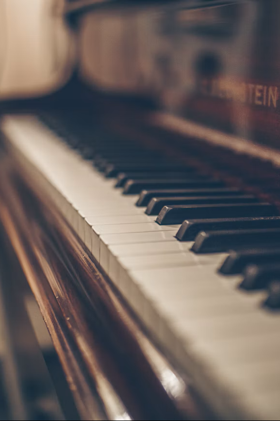

Um instante, uma vida
"
Há momentos que não precisam de muitas palavras. Precisam apenas da música certa.
Elas acompanham uma mão que treme, um olhar que procura alguém na multidão, um abraço que demorou anos para chegar. Por alguns minutos, a música deixa de ser som e passa a fazer parte de uma lembrança.
É por isso que eu toco.

A origem
Minha história começou cedo. Aos seis anos, influenciado pelo meu pai, comecei a descobrir o piano e o universo que existia por trás de cada tecla.
Com o tempo, vieram outros instrumentos, outras experiências e diferentes lugares para tocar. A música passou pela infância, pela igreja, pelos estudos e por fases que me ensinaram algo novo sobre mim mesmo.
Quando comecei a tocar em casamentos, percebi que aquela experiência reunia tudo isso: preparo, sensibilidade, responsabilidade e a oportunidade de fazer parte de algo que não se repete.
Trajetória
Cada instrumento abriu uma porta. Cada
experiência acrescentou uma camada à forma
como eu escuto, aprendo e toco.
06 anos
O piano, a influência do meu pai e a curiosidade de descobrir o que minhas mãos poderiam fazer
Novos sons
A flauta, o violão e a flauta trasnversal ampliaram meu repertório e minha relação com a música.
2019
Os casamentos trouxeram um novo significado: tocar não era apenas executar uma música, mas acompanhar um momento irrepetível.
Hoje
Cada cerimônia, cada repertório e cada pessoa me lembram que a música é uma prática de atenção e cuidado.
Uma cerimônia acontece diante de todos. Mas cada pessoa vive aquele instante de um jeito diferente. A música costura essas experiências sem precisar ser o centro delas.
Os convidados chegam. Os detalhes são conferidos. O músico respira, observa e se prepara. A responsabilidade começa antes de qualquer som.
Há olhares que se encontram, sorrisos inesperados e lágrimas discretas. A música acompanha o momento, sem precisar explicar o que todos estão sentindo.
Entre promessas e silêncios, a música respeita o espaço de cada palavra. Saber quando tocar também significa saber escutar.
O ambiente muda, os sorrisos se soltam e a música acompanha a passagem de um capítulo para outro. O que fica é a memória de ter estado ali.
O invisível
O resultado pode durar minutos. A preparação começa muito antes.
Cada casal tem uma história e escolhas próprias. Aprender e adaptar músicas exige estudo, escuta e atenção aos detalhes.
Pontualidade, organização e ensaio são formas de respeito. A tranquilidade no momento depende do cuidado anterior.
O músico faz parte da experiência, mas a história pertence ao casal. É preciso acompanhar a emoção sem tirar o foco dela.
O que permanece
Talvez seja um acorde que alguém reconheça anos depois. Um sorriso que volta à memória. Ou a certeza de que, por alguns minutos, estivemos presentes em algo importante.
No fim, é isso que me move: fazer parte de histórias que continuam mesmo depois da última nota.